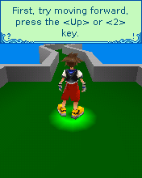

We could identify Kingdom Hearts’ scene material before we had the separate Swerve engine its native module expected. Recognizing a data file hadn’t yet given us an executable graphics service.KH01
Two original modules.
The early probe used the clean BioShock host foundation. Later work supplied both original modules, letting the original game and Swerve renderer execute their own ARM/Thumb code. New Game reached the tutorial, where walking advanced its steering prompt and Action worked.KH02KH03KH05

The fresh original New Game tutorial in the176×220 Swerve renderer. Historical desktop original-ARM/game-engine output, not a phone image.
Open the image for the full original view.
KH90Separate archived-save test fixtures exercised later scene entries. They were explicitly entry/path checks, not proof that a fresh campaign had played through those worlds. The normal app did not acquire a fictional quick-save system from that testing convenience.KH03
The chapter that is not there.
When we inspected the original ZIP, it lacked Wonderland gameplay. The journal and splash material were there, which could make the chapter look present, but the playable content wasn’t. We kept that gap visible; the recorded build didn’t replace or automatically skip it.KH04
The later control pass retained the original engine and separated steering, Action and Magic. Its host continuity was useful, while actual phone decoding, feel and a complete normal campaign remained outside this source window.KH06KH07KH08
About these records
These are the surviving checkpoint’s boundaries, not an inferred current compatibility verdict for every later package. The fresh tutorial differs from archived-save scene-entry fixtures. The original supplied ZIP’s missing Wonderland content remains explicit. Host Swerve execution and Android effect decoding have separate scopes. The image is the historical fresh tutorial, not a fixture-unlocked chapter.
The receipts
Selected source lines, investigation notes and recorded feedback. Open a receipt for the original context and scope.
KH01 / The initial investigation lacks the separate Swerve engineHistorical investigation findings
Source: Kingdom_Hearts_VCAST_Findings.txt · selected lines 4–27
RESULT Not yet playable. No standalone APK or finished Omni bridge was produced. VERIFIED ORIGINAL EXECUTION The unmodified kh.mod executes AEEMod_Load and returns a real module object. Its original CreateInstance succeeds for class 0x01026191, creating an applet with event handler 0x0010E060. Startup requests extension class 0x0102BBFC, which the inherited BREW host cannot provide. The game takes its own error path. The host then fails at unimplemented IDisplay+0x10 while the original error screen is being drawn. No accepted APP_START, title or gameplay is proven. THE MISSING DEPENDENCY Kingdom Hearts uses Superscape Swerve 3D as a separate BREW extension. Its known preserved binary is swv21brew.mod. This executable and its original descriptor are absent from the supplied Chapter 1 ZIP. swerve.m3g is a scene asset, not the engine. The supplied checkpoints contain no matching Swerve implementation or module. The checked Agrabah archive and BREW SDK extension archive did not contain that engine either. Recovering the engine is the next dependency, not proof of immediate success: extension loading and remaining BREW calls must then be implemented and tested. Startup also requests custom-font class 0x0100A004. The game continues after that font request fails, then checks the engine result. Implementing error-text rendering alone would not recover the missing engine.
KH02 / The initial probe uses the clean BioShock host foundationHistorical investigation findings
Source: Kingdom_Hearts_VCAST_Findings.txt · selected lines 69–75
REUSABLE WORK AND VERIFICATION LIMITS The host probe forks the supplied BioShock 3D v0.2.0 ARM/BREW runtime, using Kingdom Hearts package/class identification and its own diagnostic heading. Its BioShock-specific game-state memory observer was disabled. It executes original ARM instructions; the original game bytes are unchanged. The probe reproduces the startup boundary and explicitly checks that gameplay did not start. It is not a complete Swerve or Kingdom Hearts runtime.
KH03 / Both original modules reach the tutorial and separately seeded chapter entriesCheckpoint investigation notes
Source: Kingdom_Hearts_VCAST_Bridge_v0.1.1_PRIVATE_Checkpoint.zip / Kingdom_Hearts_VCAST_Bridge_v0.1.1_PRIVATE/evidence/v0.1.0-baseline/README_FIRST.txt · selected lines 22–33
WHAT WAS VERIFIED - Untouched original game and engine execute their own ARM/Thumb code. The original Swerve renderer draws the native 176 x 220 framebuffer. - New Game reaches the tutorial. Walking advances the steering prompt; Action works. Read-only inspection of original input flags proves simultaneous forward/right/Action and independent releases, without writing game state. - Separate archived-save TEST FIXTURES reach island scenes, Agrabah's opening scene/dialogue and Castle's playable bridge area/HUD. These are entry/path checks, not completed levels, combat coverage or a complete campaign test. - Native suspend/resume preserves checked original progress bytes; APP_STOP cleanup completes on the checked paths. The game uses its own file writes and tmp.dat rename transactions; there is no invented quick-save.
KH05 / The earlier bridge family and unchanged original SwerveCheckpoint investigation notes
Source: Kingdom_Hearts_VCAST_Bridge_v0.1.1_PRIVATE_Checkpoint.zip / Kingdom_Hearts_VCAST_Bridge_v0.1.1_PRIVATE/THIRD_PARTY_NOTICES.txt · selected lines 8–16
The original kh.mod and swv21brew.mod are interpreted without modification. The BREW/ARM compatibility foundation is carried from the owner's BioShock 3D v0.2.0 clean runtime and its Resident Evil Genesis, Rush Marine, Doom RPG, Contra 4 and Wolfenstein foundations. The supplied Bridge Gameplay UI v1.1.2 is included unchanged as its actual JAR, with its source and evidence. CMX WAVE handling wraps unchanged QCELP packets in standard QCP at playback. The format was checked against the owner's independent audio_doom.py parser. Original MIDI scores remain exact; Android supplies synthesis and decoding.
KH90 / Historical image / Kingdom Hearts V CASTHistorical host capture
Source: Kingdom_Hearts_VCAST_Bridge_v0.1.1_PRIVATE/evidence/v0.1.0-baseline/tutorial-play.png
Retained historical host output. Original emulator chrome, where present, is part of the unchanged source image. No phone capture or phone performance is inferred.
Unchanged historical image. Source member: Kingdom_Hearts_VCAST_Bridge_v0.1.1_PRIVATE/evidence/v0.1.0-baseline/tutorial-play.png SHA-256: 88518e83e4f2e279ad18c5c3c3832eb5eae40b7f247750b4dc07e7df7b6c19a1 The fresh original New Game tutorial in the176×220 Swerve renderer. Historical desktop original-ARM/game-engine output, not a phone image. Scope: Unchanged historical desktop original-runtime framebuffer. Visually inspected: game-only pixels, no personal interface and no EXIF. Not a physical-phone screenshot.
KH04 / Wonderland gameplay is missing, despite surviving splash materialCheckpoint investigation notes
Source: Kingdom_Hearts_VCAST_Bridge_v0.1.1_PRIVATE_Checkpoint.zip / Kingdom_Hearts_VCAST_Bridge_v0.1.1_PRIVATE/evidence/v0.1.0-baseline/README_FIRST.txt · selected lines 46–60
WHAT STILL NEEDS TESTING / KNOWN LIMITS - Physical phone startup, speed, heat, touch comfort, audio, background/resume, Downloads export and gameplay through later scenes have not been verified. Host instruction counts and virtual clocks are not phone performance results. - QCELP effects are passed to Android as QCP. Decoder availability can vary by phone; successful desktop decoding does not prove Android playback. Errors are recorded. Original MIDI is passed unchanged to Android's synthesizer. - Android system sans substitutes for the unavailable optional font extension; text metrics and raster edges can differ from the original handset. - Wonderland gameplay is absent from this original ZIP. Journal/splash material does not make it a playable chapter. No replacement or automatic skip exists; a complete normal campaign through that missing chapter is not possible here. - Current Omni hosted import/remove/reimport with save preservation, and two cumulative production public exports, remain acceptance checks. The included independent contract audit is not a substitute for those host/phone checks.
KH06 / Neutral steering center and separate Action and MagicCheckpoint investigation notes
Source: Kingdom_Hearts_VCAST_Bridge_v0.1.1_PRIVATE_Checkpoint.zip / Kingdom_Hearts_VCAST_Bridge_v0.1.1_PRIVATE/README_FIRST.txt · selected lines 3–19
CHANGES Left thumb: a larger square eight-way digital steering pad. Up moves forward, down moves back, and left/right turn. Slide into a corner to hold forward/back and turn together. The center is neutral and can never send Action/OK. A six-degree tolerance beyond direction boundaries prevents small thumb movements from repeatedly switching sectors. Moving to the center, leaving the pad, releasing or cancelling the contact releases that contact's directions. Right thumb: large ACTION (jump / attack / interact / menu confirm), with MAGIC immediately underneath. The bottom utility row has ITEMS, LEFT SOFT, RIGHT SOFT and CLEAR. Both softkeys keep their original contextual game functions. ORIGINAL KEYPAD / D-PAD RETURN switches inline with the same renderer and viewport bounds. The original 3x4 numeric keys replace the steering pad; Action, Magic and the complete utility row remain available in the same positions. Controller buttons retain the existing mappings. Mode changes release touch holds while preserving separately owned physical-controller holds.
KH07 / Latest original-runtime continuity and controls-only checksCheckpoint investigation notes
Source: Kingdom_Hearts_VCAST_Bridge_v0.1.1_PRIVATE_Checkpoint.zip / Kingdom_Hearts_VCAST_Bridge_v0.1.1_PRIVATE/README_FIRST.txt · selected lines 32–59
VERIFICATION 11 integrated Android API 34/Robolectric tests pass. They cover actual Activity startup, both layouts at five screen sizes, native graphics, original-generated save restoration, report capture during a blocked worker, Android Back cleanup, real multi-pointer MotionEvents through the production control tree, independent movement/Action/Magic holds, two separate steering contacts, neutral-center behavior, direction-boundary tolerance, cancellation and exit/re-entry, exact keypad/utility codes, and mode changes with a held physical-controller input. Fractional display density is checked with no overlapping/clipped targets or buttons below 48dp; the pad is square and at least 180dp. The real Android layout previews use a captured original tutorial frame for visual inspection. They are not physical-phone screenshots. The supplied v0.1.0 gameplay recording informed this pass; v0.1.1 thumb comfort and combat feel still need a phone test. No combat or full-level acceptance is claimed. The original ARM/Swerve runtime, worker execution logic, original game assets, audio wrapper/playback logic, save handling, native turn speed, original inputs, UI kit JAR and Omni import/preparation rules are unchanged from v0.1.0. The only controller-file change is the report's version text. Runtime/asset continuity hashes and the independent strict handoff audit are under evidence/. KNOWN BASELINE LIMITS The original optional font extension uses a system-sans fallback. Wonderland gameplay is absent from the supplied dump. QCELP effects still depend on the phone's QCP decoder. Full production Omni import/export carry-forward and later campaign coverage remain separate acceptance checks. This is a private test update, not an accepted public release.
KH08 / Original engine and effects keep their timing and test boundariesCheckpoint investigation notes
Source: Kingdom_Hearts_VCAST_Bridge_v0.1.1_PRIVATE_Checkpoint.zip / Kingdom_Hearts_VCAST_Bridge_v0.1.1_PRIVATE/AGENTS.md · selected lines 30–39
Native timers keep their original deadlines. Input, reports and media callbacks do not pump extra game ticks. Quick releases may wait only until one naturally due callback has seen the press; lifecycle releases are immediate. The 500M per-callback instruction limit is a fault ceiling for heavy scene loads, not a performance target. Virtual clocks and guest-memory inspection are host tests. The original optional font extension is unavailable; system sans is a disclosed fallback. CMX WAVE effects are unwrapped without changing QCELP packets and passed as QCP to Android. Do not claim phone playback without device evidence. Original MIDI is unchanged. No replacement soundtrack or looping under levels.